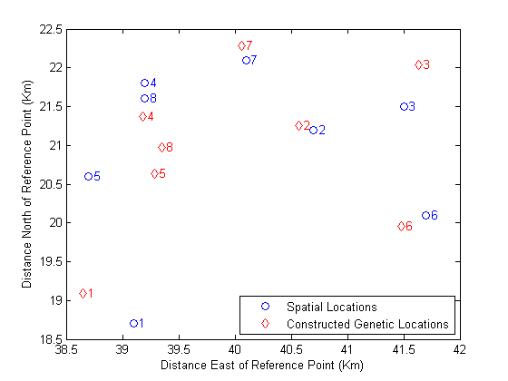
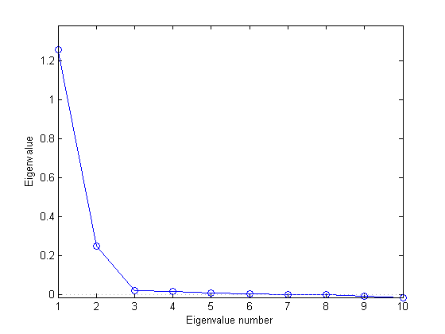
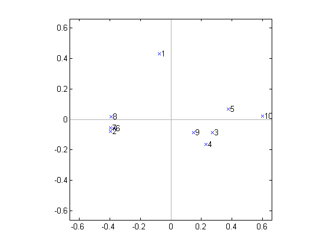
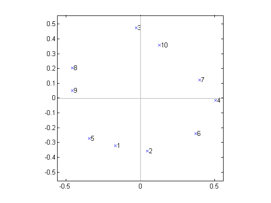

古典的多次元尺度構成法
主座標分析 (Principal Coordinates Analysis) としても知られる古典的多次元尺度構成法 (Classical multidimensional scaling) は、点間距離の行列を使用し、点の構成を作成します。これらの点は 2 次元か 3 次元で構成できるのが理想的です。それらの点の間のユークリッド距離は、近似的にオリジナルの距離行列を再現します。このように、点の散布図はオリジナルの距離の視覚的な表現を提供します。
このデモの 2 つの例では、空間的な距離以外の相違に対する多次元尺度構成法の適用方法と、点の構成を構築してその相違を視覚化する方法について説明します。
このデモでは、Statistics Toolbox™ の関数 cmdscale を使用した「古典的」な多次元尺度構成法 (MDS) について説明します。関数 mdscale は「非古典的」な MDS を実行します。この非古典的な MDS は、古典的な手法よりも柔軟性を発揮する場合があります。非古典的な MDS については、非古典的多次元尺度構成法のデモで説明されています。
目次
非空間的距離からの空間的な位置の再構築
動物の 1 つの種の下位個体群の数の遺伝的な「距離」、すなわち相違度を測定したと仮定します。また、その地理も把握しており、遺伝的距離と空間的距離がどの程度相関しているかを検証するとしましょう。遺伝的および空間的距離間の相関が緊密である場合は、下位個体群の間の異種交配が地理的な位置の影響を受けていることの証拠となります。
以下に、下位個体群の空間的な位置と、pdist によって生成されたものと同じベクトル形式による、遺伝距離の上三角行列を示します。
X = [39.1 18.7;
40.7 21.2;
41.5 21.5;
39.2 21.8;
38.7 20.6;
41.7 20.1;
40.1 22.1;
39.2 21.6];
D = [4.69 6.79 3.50 3.11 4.46 5.57 3.00 ...
2.10 2.27 2.65 2.36 1.99 1.74 ...
3.78 4.53 2.83 2.44 3.79 ...
1.98 4.35 2.07 0.53 ...
3.80 3.31 1.47 ...
4.35 3.82 ...
2.57];
D のこのベクトル形式は空間効率に優れていますが、距離の形式を正方行列に設定し直すと、場合によっては距離関係が見やすくなります。
squareform(D)
ans =
Columns 1 through 7
0 4.6900 6.7900 3.5000 3.1100 4.4600 5.5700
4.6900 0 2.1000 2.2700 2.6500 2.3600 1.9900
6.7900 2.1000 0 3.7800 4.5300 2.8300 2.4400
3.5000 2.2700 3.7800 0 1.9800 4.3500 2.0700
3.1100 2.6500 4.5300 1.9800 0 3.8000 3.3100
4.4600 2.3600 2.8300 4.3500 3.8000 0 4.3500
5.5700 1.9900 2.4400 2.0700 3.3100 4.3500 0
3.0000 1.7400 3.7900 0.5300 1.4700 3.8200 2.5700
Column 8
3.0000
1.7400
3.7900
0.5300
1.4700
3.8200
2.5700
0
cmdscale は 2 つの形式のいずれかを認識します。
[Y,eigvals] = cmdscale(D);
cmdscale の最初の出力 Y は、D で距離を再現する点間距離を持つように生成された点の行列です。種の数が 8 の場合、点 (Y の行) は 8 つの次元 (Y の列) を持っている可能性があります。遺伝距離の視覚化は、2 次元または 3 次元で点を使用するだけで済みます。幸い、cmdscale の 2 番目の出力 eigvals は、並べ替えられた固有値のセットであり、その相対振幅は安全に使用できる次元の数を示しています。最初の 2 つまたは 3 つの固有値が大きいものであれば、Y の点の座標だけで D を正しく再現できます。大きい固有値が 3 つを超えると、点の良好な低次元構成を検出できず、距離を容易に視覚化できなくなります。
[eigvals eigvals/max(abs(eigvals))]
ans =
29.0371 1.0000
13.5746 0.4675
2.0987 0.0723
0.7418 0.0255
0.3403 0.0117
0.0000 0.0000
-0.4542 -0.0156
-3.1755 -0.1094
ここでは、大きな正の固有値は 2 つしかないので、cmdscale によって生成された点の構成を 2 次元でプロットできます。2 つの負の固有値は、遺伝距離がユークリッド距離ではないこと、つまり、点の構成で D を正確に再現できないことを意味します。幸い、いずれの負の固有値も、最も大きな正の固有値と比べて小さく、Y の最初の 2 つの列への還元は非常に正確になるはずです。このことは、2 次元構成とオリジナルの距離の間の距離の誤差を考察することでチェックできます。
maxrelerr = max(abs(D - pdist(Y(:,1:2)))) / max(D)
maxrelerr =
0.1335
これで、cmdscale によって生成された「遺伝距離」と実際の地理的な位置を比較できます。cmdscale によって返された構成は、変換、回転、鏡映だけに特有なものであるため、遺伝的位置は地理的位置とは一致しない可能性があります。また、尺度に誤りがあることもあります。ただし、procrustes コマンドを使用することで、最小二乗法の意味で 2 つの点セットを比較できます。
[D,Z] = procrustes(X,Y(:,1:2)); plot(X(:,1),X(:,2),'bo',Z(:,1),Z(:,2),'rd'); labels = num2str((1:8)'); text(X(:,1)+.05,X(:,2),labels,'Color','b'); text(Z(:,1)+.05,Z(:,2),labels,'Color','r'); xlabel('Distance East of Reference Point (Km)'); ylabel('Distance North of Reference Point (Km)'); legend({'Spatial Locations','Constructed Genetic Locations'},4);
上図のプロットでは、再構成された点の最適一致を、実際の空間的な位置と同じ座標で示しています。一見、遺伝距離は、下位個体群の間の空間的距離と密接な関連を持ってはいません。
多次元尺度構成法を使用した相関行列の視覚化
10 個の変数のセットについて、次の相関行列を計算したと仮定します。これらの変数にはすべて明確な相関性があり、一部に顕著なペアワイズ相関が存在していることが明らかです。しかし、このように変数の数が多いと、10 個すべての変数の関連性を見分けるのは容易ではありません。
Rho = ...
[1 0.3906 0.3746 0.3318 0.4141 0.4279 0.4216 0.4703 0.4362 0.2066;
0.3906 1 0.3200 0.3629 0.2211 0.9520 0.9811 0.9052 0.4567 0 ;
0.3746 0.3200 1 0.8993 0.7999 0.3589 0.3460 0.3333 0.8639 0.6527;
0.3318 0.3629 0.8993 1 0.7125 0.3959 0.3663 0.3394 0.8719 0.5726;
0.4141 0.2211 0.7999 0.7125 1 0.2374 0.2079 0.2335 0.7050 0.7469;
0.4279 0.9520 0.3589 0.3959 0.2374 1 0.9657 0.9363 0.4791 0.0254;
0.4216 0.9811 0.3460 0.3663 0.2079 0.9657 1 0.9123 0.4554 0.0011;
0.4703 0.9052 0.3333 0.3394 0.2335 0.9363 0.9123 1 0.4418 0.0099;
0.4362 0.4567 0.8639 0.8719 0.7050 0.4791 0.4554 0.4418 1 0.5272;
0.2066 0 0.6527 0.5726 0.7469 0.0254 0.0011 0.0099 0.5272 1 ];
多次元尺度構成法は、多くの場合、ペアワイズ距離を使用して点を再構築する方法と見なされています。ただし、多次元尺度構成法を、距離と比べてより一般的な非類似度測定と併用することにより、通常の意味では「空間内の点」ではない事物を空間的に視覚化することもできます。Rho で記述されている変数を例にとると、cmdscale を使用して、それらの相互依存性の視覚的な表現をプロットできます。
相関では実際に類似性が測定されますが、類似性は、非類似性の単位に容易に変換できます。ここではすべての相関は正です。他にも合理的な選択肢はありますが、ここでは、
D = 1 - Rho;
上のコードを使用してください。Rho に負の相関が含まれていた場合は、たとえば、相関 -1 が、相関 0 よりも大きい非類似性を示しているのか、または小さい非類似性を示しているのかを判断し、これに従って変換を選択する必要があります。
相関行列の情報の視覚化がそもそも可能なのかどうか、つまり、次元数を 10 から 2 または 3 に削減できるのかどうかを判断することが重要です。cmdscale によって返された固有値が、この判断の鍵となります。この場合、これらの固有値のスクリーン プロットは、変数を表現するには 2 つの次元で十分であることを示しています (下のプロットの固有値には負の値がいくつかありますが、最初の 2 つの固有値と比べて小さいものです)。
[Y,eigvals] = cmdscale(D); plot(1:length(eigvals),eigvals,'bo-'); if feature('HGUsingMATLABClasses') cl = specgraphhelper('createConstantLineUsingMATLABClasses','LineStyle',... ':','Color',[.7 .7 .7],'Parent',gca); cl.Value = 0; else graph2d.constantline(0,'LineStyle',':','Color',[.7 .7 .7]); end axis([1,length(eigvals),min(eigvals),max(eigvals)*1.1]); xlabel('Eigenvalue number'); ylabel('Eigenvalue');
より関連性の低い変数のセットでは、より多くの次元が必要になることがあります。4 つ以上の変数が必要な場合、視覚化にはそれほど意味はありません。
cmdscale によって返された構成の 2 次元プロットは、変数の中でも非常に緊密な相関性を持っている変数のサブセット 2 つのほかに、それ自体で独立した単一の変数が存在することを示しています。一方のクラスタは緊密ですが、他方のクラスタは比較的ばらばらです。
labels = {' 1',' 2',' 3',' 4',' 5',' 6',' 7',' 8',' 9',' 10'};
plot(Y(:,1),Y(:,2),'bx');
axis(max(max(abs(Y))) * [-1.1,1.1,-1.1,1.1]); axis('square');
text(Y(:,1),Y(:,2),labels,'HorizontalAlignment','left');
if feature('HGUsingMATLABClasses')
hx = specgraphhelper('createConstantLineUsingMATLABClasses',...
'LineStyle','-','Color',[.7 .7 .7],'Parent',gca);
hx.Value = 0;
else
hx = graph2d.constantline(0,'LineStyle','-','Color',[.7 .7 .7]);
end
changedependvar(hx,'x');
if feature('HGUsingMATLABClasses')
hy = specgraphhelper('createConstantLineUsingMATLABClasses',...
'LineStyle','-','Color',[.7 .7 .7],'Parent',gca);
hy.Value = 0;
else
hy = graph2d.constantline(0,'LineStyle','-','Color',[.7 .7 .7]);
end
changedependvar(hy,'y');
 一方、次の相関行列について cmdscale から返された結果は、より違った構造を示しています。変数の間には実質的なまとまりはありません。どちらかといえば、それぞれの変数は 1 組の「非常に近接した近傍点」を持つが、残りの変数との相関性は低い、一種の「循環」依存性が存在しています。
Rho = ...
[1 0.7946 0.1760 0.2560 0.7818 0.4496 0.2732 0.3995 0.5305 0.2827;
0.7946 1 0.1626 0.4227 0.5674 0.6183 0.4004 0.2283 0.3495 0.2777;
0.1760 0.1626 1 0.2644 0.1864 0.1859 0.4330 0.4656 0.3947 0.8057;
0.2560 0.4227 0.2644 1 0.1017 0.7426 0.8340 0 0.0499 0.4853;
0.7818 0.5674 0.1864 0.1017 1 0.2733 0.1484 0.4890 0.6138 0.2025;
0.4496 0.6183 0.1859 0.7426 0.2733 1 0.6303 0.0648 0.1035 0.3242;
0.2732 0.4004 0.4330 0.8340 0.1484 0.6303 1 0.1444 0.1357 0.6291;
0.3995 0.2283 0.4656 0 0.4890 0.0648 0.1444 1 0.8599 0.3948;
0.5305 0.3495 0.3947 0.0499 0.6138 0.1035 0.1357 0.8599 1 0.3100;
0.2827 0.2777 0.8057 0.4853 0.2025 0.3242 0.6291 0.3948 0.3100 1 ];
[Y,eigvals] = cmdscale(1-Rho);
[eigvals eigvals./max(abs(eigvals))]
ans =
1.1416 1.0000
0.7742 0.6782
0.0335 0.0294
0.0280 0.0245
0.0239 0.0210
0.0075 0.0066
0.0046 0.0040
-0.0000 -0.0000
-0.0151 -0.0132
-0.0472 -0.0413
plot(Y(:,1),Y(:,2),'bx'); axis(max(max(abs(Y))) * [-1.1,1.1,-1.1,1.1]); axis('square'); text(Y(:,1),Y(:,2),labels,'HorizontalAlignment','left'); if feature('HGUsingMATLABClasses') hx = specgraphhelper('createConstantLineUsingMATLABClasses',... 'LineStyle','-','Color',[.7 .7 .7],'Parent',gca); hx.Value = 0; else hx = graph2d.constantline(0, 'LineStyle','-','Color',[.7 .7 .7]); end changedependvar(hx,'x'); if feature('HGUsingMATLABClasses') hy = specgraphhelper('createConstantLineUsingMATLABClasses',... 'LineStyle','-','Color',[.7 .7 .7],'Parent',gca); hy.Value = 0; else hy = graph2d.constantline(0,'LineStyle','-','Color',[.7 .7 .7]); end changedependvar(hy,'y');
主成分分析と古典的多次元尺度構成法の比較
多次元尺度構成法は、データの距離または非類似性しか利用できない場合にデータを視覚化するのに多く利用される方法です。ただし、オリジナルのデータを利用できる場合は、データを距離行列に還元し、cmdscale を使用して点の新しい構成を作成し、これらの点の最初の数次元のみを維持することによって、多次元尺度構成法を次元還元法として使用することもできます。多次元尺度構成法のこのような適用は、主成分分析 (Principal Components Analysis：PCA) とよく似ています。実際、点間のユークリッド距離を使用して cmdscale を呼び出すと、結果は、記号の変更まで PCA とまったく同じになります。
n = 10; m = 5;
X = randn(n,m);
D = pdist(X,'Euclidean');
[Y,eigvals] = cmdscale(D);
[PC,Score,latent] = princomp(X);
Y
Y =
-1.0158 1.2386 0.0060 -0.1862 -0.0139
0.4233 1.2419 -0.4636 -0.3256 0.0130
1.9488 -0.4976 -0.4526 0.0984 -0.3629
-1.7196 -1.8955 0.4119 -0.4262 0.1036
0.2982 -1.0178 -1.2512 0.0637 -0.1102
-0.2840 -0.1362 1.2490 0.2974 -0.1863
0.2371 -0.2654 -0.3294 0.4313 0.4508
-1.5444 0.4608 1.0132 0.1571 -0.0944
-1.5988 0.6909 -0.9806 0.0849 0.0122
3.2552 0.1803 0.7974 -0.1949 0.1882
Score
Score =
1.0158 1.2386 0.0060 -0.1862 0.0139
-0.4233 1.2419 -0.4636 -0.3256 -0.0130
-1.9488 -0.4976 -0.4526 0.0984 0.3629
1.7196 -1.8955 0.4119 -0.4262 -0.1036
-0.2982 -1.0178 -1.2512 0.0637 0.1102
0.2840 -0.1362 1.2490 0.2974 0.1863
-0.2371 -0.2654 -0.3294 0.4313 -0.4508
1.5444 0.4608 1.0132 0.1571 0.0944
1.5988 0.6909 -0.9806 0.0849 -0.0122
-3.2552 0.1803 0.7974 -0.1949 -0.1882
0 (ゼロ) 以外の固有値でさえ、スケール ファクターまで同じです。
[eigvals(1:m) (n-1)*latent]
ans =
23.7294 23.7294
8.7643 8.7643
6.4474 6.4474
0.6804 0.6804
0.4373 0.4373